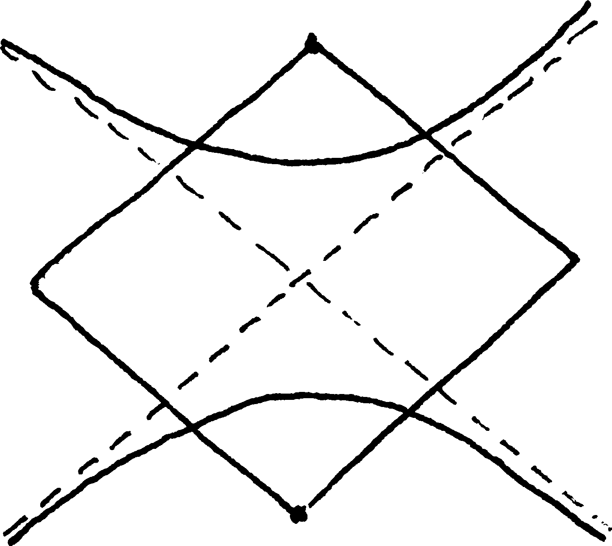
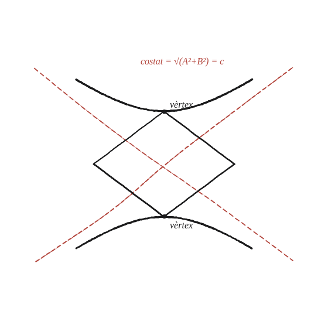

Per què la constant focal d'una hipèrbola és igual al costat del rombe?

Identificar el diamant abans de mesurar-lo
Al voltant d'una hipèrbola hi ha dos quadrilàters que criden l'atenció, i convé no confondre'ls. El que no és el diamant: el rectangle que formen les dues asímptotes amb les tangents als vèrtexs, de vèrtexs (±a,±b) i amb les asímptotes com a diagonals. Aquell existeix i és útil, però els seus costats fan 2a i 2b, no c.
"El diamant" té els quatre vèrtexs sobre els eixos: els dos vèrtexs de la hipèrbola, a distància a del centre, i els dos punts a distància b del centre sobre l'eix perpendicular. Amb l'orientació habitual són (a,0), (0,b), (−a,0) i (0,−b). Els seus costats resulten paral·lels a les asímptotes —el que va de (a,0) a (0,b) té pendent −b/a, exactament el d'una d'elles—, i és per aquí que la figura s'enganxa a la hipèrbola.
Reconèixer que és un rombe
Les diagonals d'aquest quadrilàter —una de longitud 2a (entre els dos vèrtexs), l'altra de longitud 2b (entre els altres dos punts)— es tallen exactament al centre, que n'és el punt mitjà comú, i ho fan en angle recte (una diagonal és sobre l'eix horitzontal, l'altra sobre el vertical, perpendiculars per construcció). Un quadrilàter amb les diagonals perpendiculars i que es reparteixen per la meitat és, sempre, un rombe —els seus quatre costats són iguals.

El costat, com a hipotenusa
Cada costat del rombe uneix un vèrtex de la hipèrbola (per exemple, (a,0)) amb un dels altres dos punts (per exemple, (0,b)) —la distància entre ells és la hipotenusa d'un triangle rectangle amb catets a i b: costat = √(a²+b²).
Reconèixer aquesta xifra
√(a²+b²) és, precisament, com es defineix c —la distància del centre als focus d'una hipèrbola, la "constant focal" d'aquest recorregut. El costat del rombe i la distància del centre a cada focus són, doncs, exactament el mateix nombre, no només valors que coincideixen per casualitat en un exemple concret.
El costat del rombe que té per diagonals els dos eixos de la hipèrbola —2a entre els vèrtexs i 2b sobre l'eix perpendicular— val √(a²+b²), exactament la mateixa expressió que c, la distància del centre als focus d'una hipèrbola. Aquesta identitat surt de reconèixer el quadrilàter com un rombe (diagonals perpendiculars 2a i 2b, que es reparteixen per la meitat), i el seu costat com la hipotenusa del mateix triangle rectangle (a,b,c) que ja apareixia amagat a l'equació de la hipèrbola des del principi.
Comprovació
a=3, b=4: costat del diamant = √(9+16)=√25=5 —un triangle 3-4-5 exacte. Els focus, a distància c=5 del centre sobre l'eix dels vèrtexs, coincideixen amb aquest mateix valor.